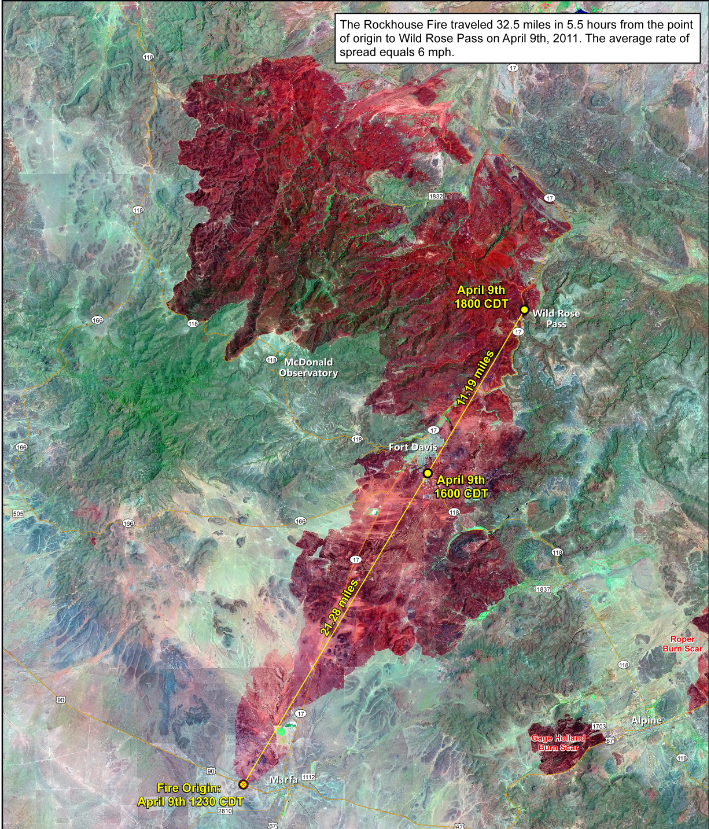
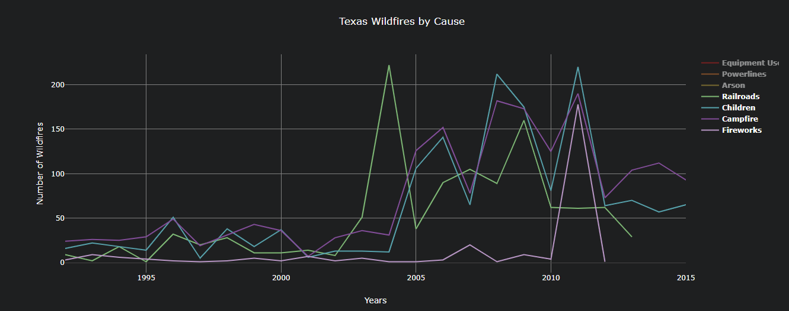
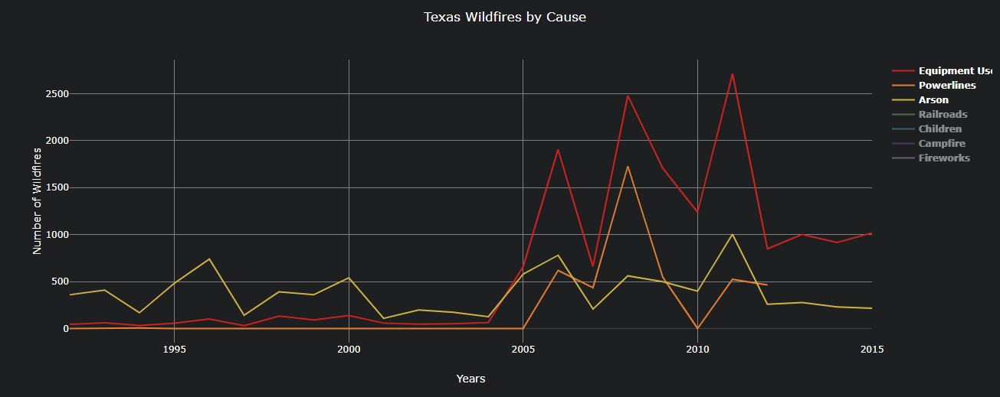

Wildfires not only affect our environment but also affect our air quality, destorys thousands of homes, and take away lives (human and animals).
Wildfires most often happen quickly and without warning.
Below is a picture of The Rockhouse Fire from 2011 around the Fort Davis area in west Texas. This fire started from an electrical short in an abandoned building and ended up burning roughly 63 acres **per minute**! In total, this fire burned 20,800 acres in roughly 5.5 hours with an average speed of 6mph.
The average human can run 8-10 mph but cannot keep up the pace for 5.5 hours much like this fire did.

We all know that children can be rotten and destructive (semi-kidding), but what we didn't know is that they cause almost the same amount of wildfires as campfires do!

In 2011, Texas saw a massive influx of fires due to a serious drought. Roughly 3.5 million acres were burned throughout 2011 with the leading cause being “Equipment Use” with "Arson" trailing close behind as the second leading cause.

As you can see, in 2011, Texas had burned roughly 3.5 MILLION acres which is almost the same size as state of Connecticut (3.54 mil acres)!!